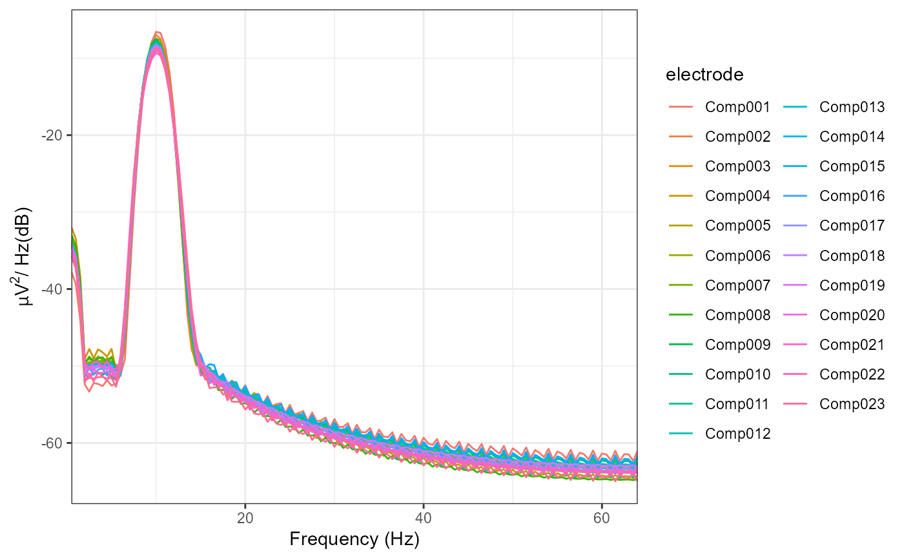
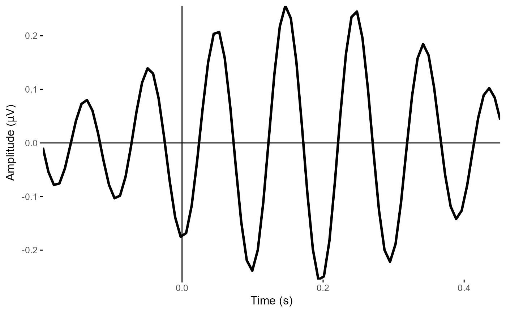
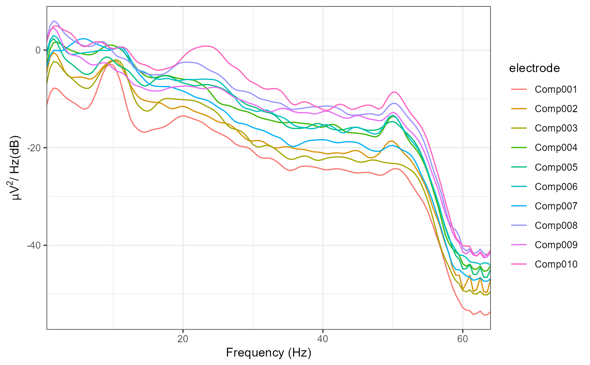
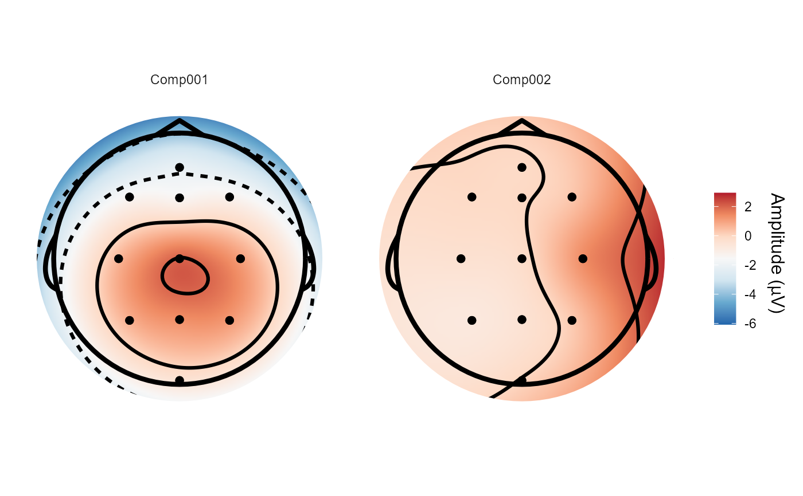
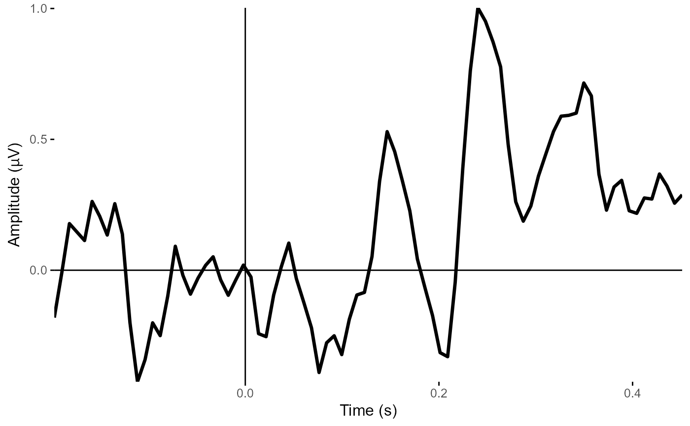

R/signal_decomposition.R
eeg_decompose.RdImplements a selection of Generalized Eigenvalue based decomposition methods for EEG signals. Intended for isolating oscillations at specified frequencies, decomposing channel-based data into components reflecting distinct or combinations of sources of oscillatory signals. Currently, spatio-spectral decomposition (Nikulin, Nolte, & Curio, 2011) and Rhythmic Entrainment Source Separation (Cohen & Gulbinate, 2017) are implemented. The key difference between the two is that the former returns the results of the data-derived spatial filters applied to the bandpass-filtered "signal" data, whereas the latter returns the results of the filters applied to the original, broadband data.
eeg_decompose(data, ...)
# S3 method for eeg_epochs
eeg_decompose(
data,
sig_range,
noise_range,
method = "ssd",
verbose = TRUE,
order = 2,
...
)An eeg_data object
Additional parameters
Vector with two inputs, the lower and upper bounds of the frequency range of interest
Range of frequencies to be considered noise (e.g. bounds of flanker frequencies)
Type of decomposition to apply. Currently only "ssd" is supported.
Informative messages printed to console. Defaults to TRUE.
Filter order for filter applied to signal/noise
An eeg_ICA object. Note that
eeg_epochs: method for eeg_epochs objects
Cohen, M. X., & Gulbinate, R. (2017). Rhythmic entrainment source separation: Optimizing analyses of neural responses to rhythmic sensory stimulation. NeuroImage, 147, 43-56. https://doi.org/10.1016/j.neuroimage.2016.11.036
Haufe, S., Dähne, S., & Nikulin, V. V. (2014). Dimensionality reduction for the analysis of brain oscillations. NeuroImage, 101, 583–597. https://doi.org/10.1016/j.neuroimage.2014.06.073
Nikulin, V. V., Nolte, G., & Curio, G. (2011). A novel method for reliable and fast extraction of neuronal EEG/MEG oscillations on the basis of spatio-spectral decomposition. NeuroImage, 55(4), 1528–1535. https://doi.org/10.1016/j.neuroimage.2011.01.057
Other decompositions:
run_ICA()
# The default method is Spatio-Spectral Decomposition, which returns
# spatially and temporally filtered source timecourses.
decomposed <-
eeg_decompose(demo_epochs,
sig_range = c(9, 11),
noise_range = c(8, 12),
method = "ssd")
#> Performing ssd...
#> Band-pass IIR filter from 9 - 11 Hz
#> Effective filter order: 4 (two-pass)
#> Removing channel means per epoch...
#> Band-pass IIR filter from 8 - 12 Hz
#> Effective filter order: 4 (two-pass)
#> Removing channel means per epoch...
#> Band-stop IIR filter from 8.5 - 11.5 Hz.
#> Effective filter order: 4 (two-pass)
#> Removing channel means per epoch...
#> Input data is not full rank; returning 10components
plot_psd(decomposed)
#> Removing channel means per epoch...
#> Computing Power Spectral Density using Welch's method.
#> FFT length: 256
#> Segment length: 84
#> Overlapping points: 42 (50% overlap)

# We can plot the spatial filters using `topoplot()`
topoplot(decomposed, 1:2)
#> Using electrode locations from data.
#> Plotting head r 95 mm
plot_timecourse(decomposed, 1)

# method = "ress" returns spatially but not temporally filtered timecourses.
with_RESS <-
eeg_decompose(demo_epochs,
sig_range = c(9, 11),
noise_range = c(8, 12),
method = "ress")
#> Performing ress...
#> Band-pass IIR filter from 9 - 11 Hz
#> Effective filter order: 4 (two-pass)
#> Removing channel means per epoch...
#> Band-pass IIR filter from 8 - 12 Hz
#> Effective filter order: 4 (two-pass)
#> Removing channel means per epoch...
#> Band-stop IIR filter from 8.5 - 11.5 Hz.
#> Effective filter order: 4 (two-pass)
#> Removing channel means per epoch...
#> Input data is not full rank; returning 10components
plot_psd(with_RESS)
#> Removing channel means per epoch...
#> Computing Power Spectral Density using Welch's method.
#> FFT length: 256
#> Segment length: 84
#> Overlapping points: 42 (50% overlap)

# The topographical plots are identical to those using "ssd", as the
# spatial filters are the same.
topoplot(with_RESS, 1:2)
#> Using electrode locations from data.
#> Plotting head r 95 mm

plot_timecourse(with_RESS, 1)
